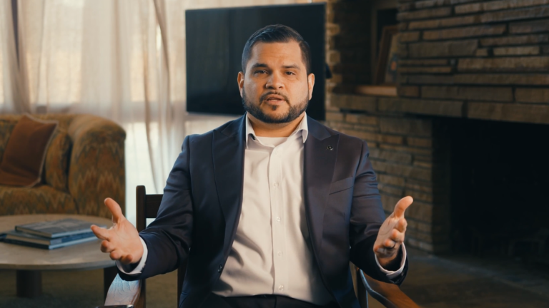
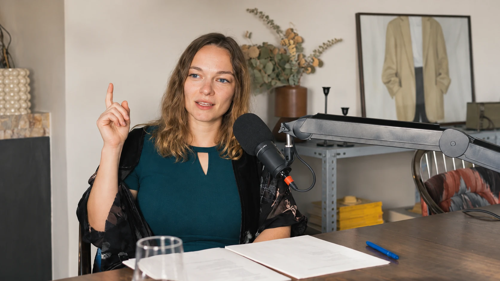
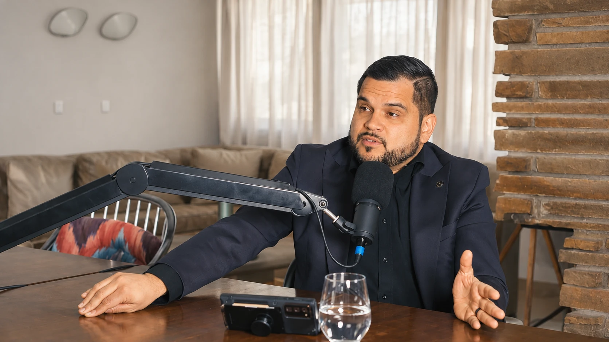

Courses / Podcast-style production
Relationship Rescue
Should We Stay Together? and Survive & Thrive
Online courses combining teaching and podcast-style conversations with Patrick and Maddie Martinez.
About the project
Relationship Rescue combines on-camera teaching and podcast-style conversations with Patrick and Maddie Martinez. RedRiver produced both Should We Stay Together? and Survive & Thrive.
The production moves between individual teaching and conversations around the table, bringing both formats into the courses. Patrick and Maddie appear separately and together, with filming, lighting, sound, editing, graphics and captions handled by RedRiver.
The photographs offer a look at the teaching and conversation setups used in the courses. You can explore both courses on Patrick and Maddie's website.
From the project



Production
RedRiver handled the filming, lighting, sound, editing, graphics, and captions.